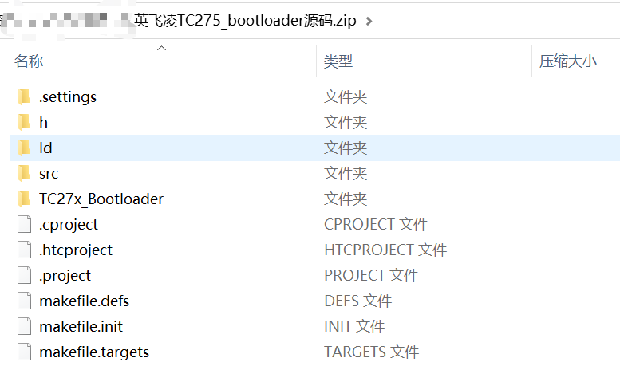
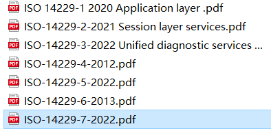

Skip to main content
Ctrl
+
K
曹志成的 文档
Site Navigation
编程语言
电路
工具
结构
开发板
项目
杂项
知识
GitHub
Site Navigation
编程语言
电路
工具
结构
开发板
项目
杂项
知识
GitHub
Section Navigation
autosar
can
i2c
lin
nvm
spi
uds
xcp
串口
功能安全
知识
uds
uds
#
资源
#
英飞凌TC275_bootloader源码.zip🎈

14229协议part1-7

14229协议part1-7
#
On this page
资源
显示源代码